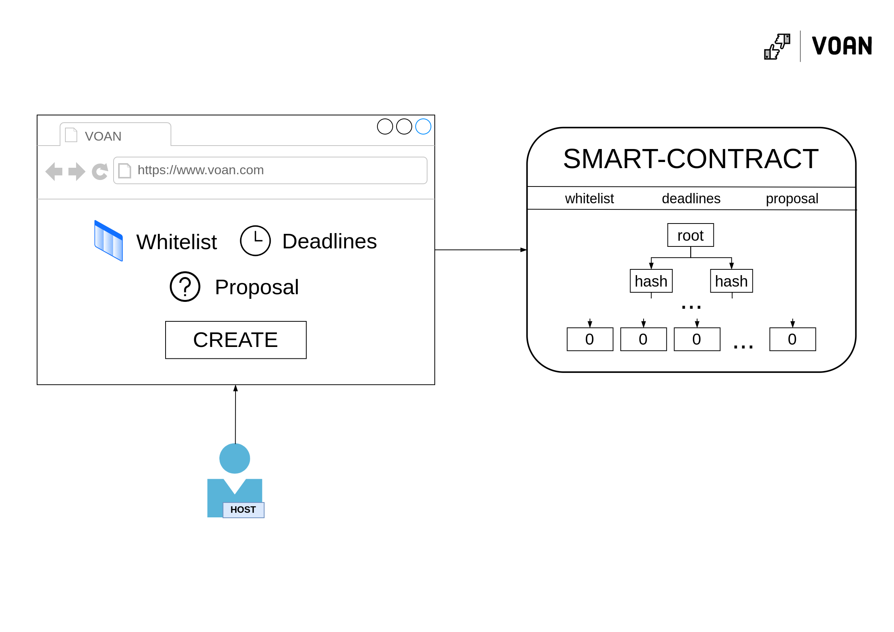
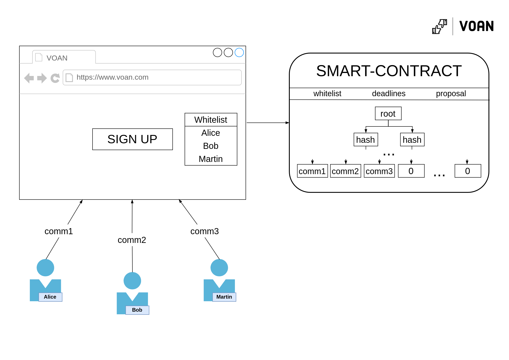

VoAn - ANonymous VOting platform on NEAR
One of the key requirements for voting is privacy. There is no privacy-by-default on the NEAR Protocol. The main motivation for VoAn comes from the experience of participating in DAOs: you cannot vote against the proposal, because you may offend someone. Anonymity would be a great option.
Privacy is normal!
On this web-site you can find info on:
Overview
VoAn is a platform that enables anonymous voting. The project was created for the Metabuild III Hackathon. Currently supports maximum of 8 participants.
To learn how to use it check the how to use section. To learn how it works check the how it works section.
Smart-contract is running on v1.voan.testnet
Motivation
The complete transparency and distributed nature of the blockchain makes it hard to operate in a private manner. Transactions between wallets, smart contract calls and their results are considered public data and are readily available to anyone. Where some use cases substantially benefit from the transparency of the blockchain, there are a wide range of applications where privatization is instrumental for their progress.
One such application is voting. With blockchain igniting the paradigm shift to user ownership and control, many aspects of applications, organizations and the protocols themselves rely on voting for an endless variety of aspects. From voting on protocol changes, community votes on roadmap changes, to DAO voting on investment decisions, trust-less voting mechanisms have been prime use cases for the blockchain.
However, voting is an application that suffers from over transparency. Knowing that your vote is public information may potentially impact what you vote for, furthermore, whether you voted or not may also impact your standings within a community or organization; this can be especially imagined within a small DAO setting. What is needed is a solution which provides trust-less voting for any purpose while retaining the privacy of the voters.
How it works
Abstract
As everything on the blockchains is visible to others (f.e. you cannot send tokens to your friends privately) it is impossible to build privacy preserving apps on modern blockchains (NEAR Protocol, Ethereum) without the help of other primitives. The main component which enables us to build such apps is zk-cryptography: at its core, it allows us to prove that we know some information, without revealing that information. For example: for some publicly-known number \(c\), I can prove that I know factors \(a\) and \(b\) (without revealing them), such that \(a * b = c\). This notion can be taken further to essentially prove that a party belong to a certain set without revealing which party they are (this is what is known as a proof of set membership). Zero knowledge group membership is actually the key mechanism behind anonymous voting. Let's divide the process into several stages:
- Voting creation/initialization
- Voting itself
In the first step, the host of a voting sets the rules for the vote: which proposal, deadlines, jury list/whitelist, etc. The main thing here is the whitelist. This whitelist contains the public keys of participants authorized to take part in the vote.
In the second step, participants can vote. They do so by proving their knowledge of a private key that matches their public key and that this exact public key is in the whitelist. By that, participants don't reveal themselves directly but are still able to prove that they have the right to vote (if a person was not on the whitelist, he would not be able to create such evidence).
There are few problems with this naive scheme, some of which you might have noticed yourself:
- Participants can vote more than once
- Participants will reveal themselves if they call the transaction from their publicly known address/account
Let's discuss the second problem first. As already mentioned, due to the transparency of the blockchain, if a participant calls a vote-transaction from his address, he will reveal his identity. One of the solutions can come to mind is to create a new account and vote from it. But in blockchains, you have to pay a GAS fee for execute contract calls. So, you would need to top up the balance of a new account, but if you do so, it will be easy to establish a connection between a publicly known account and this new one. Seems impossible now ... But, actually we can delegate the transaction call to a separate person - relayer, who will pay for our transaction. By doing so, we don't even need to interact with the blockchain (the relayer will do it for us). There are few problems with that too, but they are solvable:
- Relayer can frontrun (change our vote value) - this can be solved if the proof depends on the vote value (so if he changes it, the proof will become invalid and be rejected by the smart contract)
- Relayer can censor votes - this can be solved if there are many relayers
- Relayer need money/other motivation to work - this can be solved with an incentive mechanism or if host pays fees to relayers
Before we move to the first problem (double voting), it's important to say that the use of real blockchain accounts (namely, the creation of proofs of ownership of a private key) is not a ZK-Friendly operation (you as a client will create such a proof for a very long time), that's why we need to think about other ways to do it ... one solution is by adding an additional stage - registration. Here we will randomly generate a secret number and send the commitment (hash of the secret number) to the smart-contract such that the commitment will mimic the role of the public key; and of course - we can make proving the knowledge of the preimage of the hash-function ZK-Friendly.
Now, let's discuss how to solve the first problem ... the solution is really simple: at the registration stage, instead of generating one number (\(secret\)), you can generate another one (let's call it \(nullifier)\) and \(commitment = Hash(secret, nullifier)\). Then, at the voting stage, when we make a ZK proof, we will reveal the \(nullifier\). This way we never reveal the secrets to generate a full proof, but since each proof we produce will be using the same nullifier, if the smart contract keeps track of used nullifiers, we won't be able to vote twice.
Voting creation/initialization

Voting creation scheme
Done by host as described earlier.
Registration

Registration scheme
Users from the whitelist can sign up for voting by submitting a commitment = \(Hash(secret, nullifier)\).
Voting

Voting scheme
Participants choose a vote option (yes or no) and vote through the relayer, by creating a ZK proof locally (by using their secret) that they are one of the registered members and then sending the proof him.
Tech stack
Programming languages:
- Rust - Smart-contract, tests
- Circom - zkSNARK circuits
- NodeJS - Relayer
- JS | React | SnarkJS - WebUI + ZK proofs generation
Primitives:
- Groth16 proving scheme - used for a zkp-side (arkworks-rs/groth16 + electron-labs/verifier & SnarkJS + Circom)
- Merkle Tree + MiMCSponge (fully implemented by our team)
How to use
Roadmap
- Reimplement Merkle Tree (make it sparse/optimal) and refactor smart-contract
- Reimplement Groth16 on-chain verification with NEAR Core's bn254 precompiles
- Recompile circuits (add support for bigger Merkle trees)
- Partnership with AstroDAO or building our own platform with tokenomics & rewards for relayers
- Web-site design & refactoring
- Beta version launch
- Multiple relayers network launch
- Smart-contract audit & circuits audit
- Mainnet launch
- Rewards for relayers